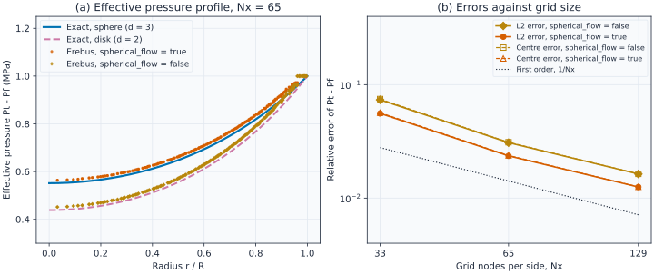
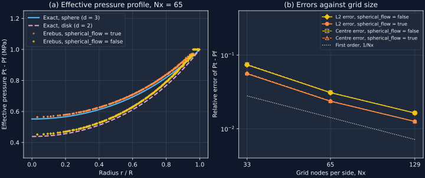

Spherical Compaction
What this page checks
This page checks the compaction coupling of the hydromechanical solve of Erebus.jl. In compaction, the solid frame of a porous rock, the matrix, closes its pores and squeezes out the pore fluid. Validation here means that we run the code on a case where we know the right answer from another source. The test then checks that the code gives that answer. If this part were wrong, the pore pressure, the compaction of the rock and the fluid flow that follows from it would be wrong. The venting and the fracturing that depend on the pore pressure would then be wrong too.
The page checks 3 parts of the solve:
- the compaction term in the continuity row of the solid;
- the same term in the continuity row of the fluid;
- the spherical face weights of both continuity rows, which the option
geometry.spherical_flowturns on.
The text below defines the compaction term, the continuity rows and the face weights.
The page has one case, which it runs with the option on and off. The case says why the check exists, what it tests, how we know the right answer and why it matters. The box "Test details" at the end of the case gives the reference, the tolerance, the test ids and the command.
How the compaction term enters the continuity rows. In a porous rock the solid matrix and the pore fluid have separate pressures. These are the total pressure $P_t$ and the fluid pressure $P_f$, both in Pa. Their difference is the effective pressure $P_e = P_t - P_f$. The matrix compacts or dilates at the rate $P_e / (\zeta (1 - \phi))$, in 1/s. Here $\zeta$ is the compaction viscosity in Pa s and $\phi$ the porosity. The fluid that the matrix squeezes out flows by Darcy's law. A continuity row is the row of the linear system that holds the volume balance of one phase in one cell. The continuity rows of the solid and of the fluid are
\[\nabla \cdot \mathbf{v}_s + \frac{P_e}{\zeta (1 - \phi)} = 0, \qquad \nabla \cdot \mathbf{q} - \frac{P_e}{\zeta (1 - \phi)} = 0, \qquad \mathbf{q} = -\frac{k}{\mu} \nabla P_f.\]
Here $\mathbf{v}_s$ is the solid velocity and $\mathbf{q}$ the Darcy flux, both in m/s. The permeability is $k$ in m², and the fluid viscosity is $\mu$ in Pa s. The code solves a 2-D grid. With geometry.spherical_flow = true the continuity rows get the face weights of a sphere, so that the 2-D grid behaves like a 3-D sphere. A face weight is a factor on the flux through a cell face. The default is off, which gives a 2-D disk. The page Spherical Darcy Flow shows how the face weights enter the divergence.
The test set-up.
- The case uses a sphere of radius $R = 50$ km in a square box of 140 km.
Nxis the number of grid nodes on each side of the box.- The rock has the permeability $k = 10^{-13}$ m² and the porosity $\phi = 0.2$.
- The fluid has the viscosity $\mu = 10^{-3}$ Pa s.
- Gravity is off, and the rock produces no fluid.
- The compaction viscosity is set so that the compaction length $\delta$ (defined below) is $R / 2 = 25$ km. This gives $\zeta = 7.8125 \times 10^{18}$ Pa s.
- The ratio of the shear viscosity to the compaction viscosity of the rock is $10^{-4}$ (see the box below).
- The faces of the outside cells are impermeable.
- At the start the total and the fluid pressure are both $P_\mathrm{amb} + P_{e,R}$ everywhere. Here $P_\mathrm{amb} = 100$ Pa is the ambient pressure and $P_{e,R} = 10^6$ Pa the surface effective pressure.
- The total pressure is held at $P_\mathrm{amb} + P_{e,R}$ on the box edge.
- The surface temperature is 200 K. The ice vapour pressure at 200 K is lower than $P_\mathrm{amb}$, so the vent pressure is $P_\mathrm{vent} = P_\mathrm{amb}$.
- The rock cells next to the outside vent their fluid. The venting conductance is much larger than the rock conductance, so these cells keep $P_f = P_\mathrm{vent}$. The effective pressure at the surface is then $P_{e,R}$.
- The compressibilities of the rock and the fluid are 0.
- The time step is $\Delta t = 10^{-10}$ yr, and the shear modulus is $G = 10^{20}$ Pa (see the box below).
The case builds the state with init_simulation, sets the grid fields directly and calls solve_stokes_darcy! once, on timestep 1.
How the case sets the viscosities
The code computes the compaction viscosity of a cell from its shear viscosity as ETAPHI = etaphikoef ETAP / phi. The case sets solver.etaphikoef to $\phi / 10^{-4}$ and the shear viscosity of the rock to $10^{-4} \zeta$, so that the ratio of the shear to the compaction viscosity is $10^{-4}$. The basic nodes are the cell corners of the grid. The basic nodes that touch no rock cell have a shear viscosity of $10^{12}$ Pa s. The shear viscosity of a cell is the harmonic mean of its 4 corner nodes, so an outside cell that shares a corner node with a rock cell has $1.33 \times 10^{12}$, $2.00 \times 10^{12}$ or $3.98 \times 10^{12}$ Pa s.
How the time step enters
The time step enters through the vent (see "Conditions of the case") and through the elastic term of the momentum rows. The elastic term replaces the shear viscosity $\eta$, in Pa s, by $\eta G \Delta t / (G \Delta t + \eta)$ with the shear modulus $G$ and the time step $\Delta t$. The time step is $10^{-10}$ yr and the case sets $G = 10^{20}$ Pa, so the rock shear viscosity in the momentum rows is 0.25 % below $\eta$.
The effective pressure and the solid velocity of a compacting sphere
Why this check exists. The compaction term could be missing from one of the 2 continuity rows. It could also have the wrong factor $(1 - \phi)$, or use a compaction viscosity other than $\zeta$. The face weights of either row could have the wrong size. Each of these faults changes the profile of the effective pressure or the solid velocity.
What it tests. We compare the effective pressure $P_e$ at the grid nodes with the exact solution. We do this for spherical_flow = true and for spherical_flow = false, at Nx = 33, 65 and 129. The centre error is $P_e / P_e^\mathrm{exact} - 1$ at the node nearest the centre. The profile error is the relative L2 error over the nodes with $r \le 0.9 R$, where $r$ is the distance from the centre in m:
\[\epsilon = \sqrt{\frac{\sum_i \left(P_{e,i} - P_{e,i}^\mathrm{exact}\right)^2}{\sum_i \left(P_{e,i}^\mathrm{exact}\right)^2}}.\]
We compare the solid velocity with the exact velocity on the faces with $0 < r \le 0.9 R$. The grid stores the x component of the velocity on the vertical faces and the y component on the horizontal faces. The velocity error is the relative L2 error over all stored components, as for the Darcy flux on the Spherical Darcy Flow page. We also compare the centre effective pressure of the sphere with that of the disk. We compare the vented fluid volume rate with the volume rate that the compaction squeezes out.
How we know the right answer. When the shear viscosity is much smaller than $\zeta$, the total pressure is uniform inside the sphere, and the fluid continuity row becomes one equation for $P_e$ (see the box below). This equation has an exact solution. The solution for the sphere ($d = 3$, spherical_flow = true) is
\[P_e(r) = P_{e,R} \frac{R \sinh(r / \delta)}{r \sinh(R / \delta)}\]
and the solution for the disk ($d = 2$, spherical_flow = false) is
\[P_e(r) = P_{e,R} \frac{I_0(r / \delta)}{I_0(R / \delta)}.\]
Here $I_0$ is the modified Bessel function of the first kind of order 0. The compaction length $\delta$, in m, follows from $\delta^2 = k \zeta (1 - \phi) / \mu$. In this radial flow the solid moves against the fluid, $\mathbf{v}_s = -\mathbf{q} = -(k / \mu) P_e'(r) \, \hat{\mathbf{r}}$, with the unit vector $\hat{\mathbf{r}}$ away from the centre. With $R / \delta = 2$ the centre values are $P_{e,R} \cdot 2 / \sinh 2$ for the sphere and $P_{e,R} / I_0(2)$ for the disk. Their ratio is $2 I_0(2) / \sinh 2 = 1.257057$.
How the exact solution follows
When the shear viscosity is much smaller than $\zeta$, the solid offers almost no resistance to shear, and the total pressure is uniform inside the sphere. Then $\nabla P_f = -\nabla P_e$, and the fluid row becomes
\[\delta^2 \nabla^2 P_e = P_e, \qquad \delta^2 = \frac{k \zeta (1 - \phi)}{\mu},\]
with $P_e = P_{e,R}$ at $r = R$. The solutions above are the solutions of this equation that stay finite at the centre. The sum of the 2 rows gives $\nabla \cdot (\mathbf{v}_s + \mathbf{q}) = 0$, so in this radial flow the solid moves against the fluid, $\mathbf{v}_s = -\mathbf{q}$. The test computes $I_0$ and $I_1$ from their power series and checks them against the integral form $I_n(x) = (1 / \pi) \int_0^\pi e^{x \cos t} \cos(n t) \, dt$.
Why it matters. Every run with a compacting matrix uses these 2 rows, and every run with spherical_flow = true uses their face weights. This case checks them with the solver step alone, so a fault found here is a fault in the continuity rows of the hydromechanical matrix.


How to read the plot. Panel (a) shows the effective pressure, in MPa, against the scaled radius $r / R$ at Nx = 65. The solid line is the exact solution for the sphere and the dashed line is the exact solution for the disk. The points are grid nodes: circles with the option on and diamonds with the option off. A pass means that the points with the option on follow the solid line and the points with the option off follow the dashed line. Panel (b) shows the L2 profile error and the centre error against Nx on logarithmic axes, with a dotted line of first order. Filled marks on solid lines are the L2 profile errors, and open marks on dashed lines are the centre errors. A pass means that the errors stay below their limits and fall along the dotted line as the grid gets finer. The figure does not show the velocity error or the centre ratio; the table at the end of the page gives them.
Known limit. The circular surface is a staircase of grid cells. The vent cells, which hold $P_f = P_\mathrm{vent}$, are the outermost rock cells, and their centres lie inside $r = R$. The surface value $P_{e,R}$ therefore sits at a radius slightly below $R$, and the computed effective pressure inside is slightly above the exact one. The centre error is positive, and the error falls at first order and not second order. The order between Nx = 65 and Nx = 129 lies between 0.90 and 0.93 for the 3 errors and both settings. The test asserts limits on the errors and on the order and not an exact match.
Test details
- Reference: exact solution $P_e(r)$ above, the exact solid velocity $-(k / \mu) P_e'(r) \, \hat{\mathbf{r}}$, and the centre ratio $2 I_0(2) / \sinh 2$.
- Tolerance:
- the centre error, the L2 profile error and the L2 velocity error: each at most 0.08, 0.034 and 0.018 for the sphere and at most 0.105, 0.044 and 0.023 for the disk at
Nx = 33, 65 and 129; - the order of each error between
Nx = 65andNx = 129: 1 within 0.35; - the centre ratio: $2 I_0(2) / \sinh 2$ within a relative 0.012 at
Nx = 65and 0.006 atNx = 129; - the vented fluid volume rate: the volume rate that the compaction squeezes out, within $10^{-8}$ of the rate;
- the fluid pressure of every vent cell: within $10^{-6} P_{e,R}$ of $P_\mathrm{amb}$, and an infinite deviation when a vent cell does not vent.
- the centre error, the L2 profile error and the L2 velocity error: each at most 0.08, 0.034 and 0.018 for the sphere and at most 0.105, 0.044 and 0.023 for the disk at
- Regression band: the allowed range around the recorded value is
PHYSICS_REGRESSION_BANDSinbenchmarks/validation_spherical_compaction.jl. It is 0.002 on each error and on each centre ratio, 0.05 on each order, $10^{-8}$ on each vented-rate closure and $10^{-6}$ on each vent pressure. - Test id:
centre_err_{off,on}_nx{33,65,129},profile_l2_inner_{off,on}_nx{33,65,129},vs_l2_inner_{off,on}_nx{33,65,129},{centre,profile,vs}_order_{off,on}_65_129,centre_ratio_on_off_nx65,centre_ratio_on_off_nx129,vent_closure_{off,on}_nx65,pf_vent_dev_{off,on}_nx65.Pkg.testrunstest/test_validation_spherical_compaction.jlatNx = 33and 65, and also compares the pressures, the solid velocity and the Darcy flux of the 6-variable and the 4-variable solver paths atNx = 33on every node. - Command:
julia --project=. tools/check_validation.jl --check.
Conditions of the case
The exact solution holds only if the case meets 4 conditions. Each condition is a test assertion, so a change of the set-up that breaks one fails the test and not only the comparison.
The 4 conditions that the test asserts
- Uniform total pressure: the spread of $P_t$ over the rock cells is below $3 \times 10^{-4} P_{e,R}$. With a shear viscosity of $10^{-3} \zeta$ the test checks that the spread stays below $3 \times 10^{-3} P_{e,R}$ and that the centre error at
Nx = 65changes by less than 10 % of its value. - Compaction viscosity:
ETAPHIequals $\zeta$ within a relative $10^{-12}$ on every rock cell. The case gives the rock viscosity to every basic node next to a rock cell; without this, cells next to the surface get a smaller compaction viscosity. - Vent pressure: the vent cells are the rock cells with a side neighbour outside the sphere. Every vent cell vents, and its fluid pressure equals $P_\mathrm{vent}$ within $10^{-6} P_{e,R}$ at
Nx = 33and 65; $P_\mathrm{vent} = P_\mathrm{amb}$ within a relative $10^{-12}$. - Fluid volume: the vented fluid volume rate equals the volume rate that the compaction squeezes out, within a relative $10^{-8}$. The vent removes at most the fluid that a cell holds in one time step, $(\phi - \phi_\mathrm{min}) / \Delta t$ per unit volume and time, with the lower porosity bound $\phi_\mathrm{min}$. The assembly of the fluid row checks this cap with the fluid pressure before the solve, $P_\mathrm{amb} + P_{e,R}$, and scales the vent conductance of a capped cell down. After the solve the code recomputes the vent rate
S_vent_gridfrom the solved fluid pressure, which lies close to $P_\mathrm{amb}$, and there the cap does not act. With a time step of $10^{-2}$ yr the cap acts on every vent cell in the assembly. The solved fluid row still vents the compaction rate, butS_vent_gridis no longer the rate of the solve: atNx = 33it exceeds the compaction rate by a factor of 114.2 for the sphere and 108.9 for the disk. The test checks for both settings that the closure then fails and checks these factors.
What this case does not test
- The spherical terms of the momentum rows. The radial solid flow of this case reaches them, but the shear viscosity of $10^{-4} \zeta$ makes their effect small. With these terms switched off, the velocity error of the sphere at
Nx = 65changes from 0.02337 to 0.02333 (one run by hand, not recorded). - The venting conductance and its face weight: the case uses the Dirichlet limit, in which the vent cells keep $P_\mathrm{vent}$ for any large conductance.
- The poroelastic compressibilities and gravity: they are off.
- Elasticity and plasticity: the shear modulus and the yield strength are $10^{20}$ Pa. So the elastic term changes the rock shear viscosity by 0.25 %, and no cell reaches its yield stress.
- The porosity change in time: the case solves one step.
- How the code computes the shear viscosity, the permeability and the face resistances from the markers: the case sets the grid fields directly. Markers are the material points that carry the rock properties.
All recorded values
The table comes from the record and must match it. To make the figure again, run these 2 commands from the repository root:
julia --project=. scripts/export_validation_compaction_data.jl <data_dir>
python3 scripts/generate_validation_compaction_figures.py <data_dir>The second command needs NumPy and Matplotlib.
Validation record: benchmarks/records/spherical_compaction.toml (Source commit b80632a7, config SHA-256 6f5abeb4c387)
| Case | Metric | Grid Nx | Measured | Reference | Tolerance | Units | Status |
|---|---|---|---|---|---|---|---|
centre | Centre effective pressure relative error, 2-D disk (Nx=33) | 33 | 7.4593e-02 | 0.0000e+00 | <= 1.05e-01 | dimensionless | PASS |
centre | Centre effective pressure relative error, 2-D disk (Nx=65) | 65 | 3.1072e-02 | 0.0000e+00 | <= 4.40e-02 | dimensionless | PASS |
centre | Centre effective pressure relative error, 2-D disk (Nx=129) | 129 | 1.6355e-02 | 0.0000e+00 | <= 2.30e-02 | dimensionless | PASS |
centre | Centre effective pressure relative error, 3-D sphere (Nx=33) | 33 | 5.6537e-02 | 0.0000e+00 | <= 8.00e-02 | dimensionless | PASS |
centre | Centre effective pressure relative error, 3-D sphere (Nx=65) | 65 | 2.3769e-02 | 0.0000e+00 | <= 3.40e-02 | dimensionless | PASS |
centre | Centre effective pressure relative error, 3-D sphere (Nx=129) | 129 | 1.2564e-02 | 0.0000e+00 | <= 1.80e-02 | dimensionless | PASS |
profile | Effective pressure L2 relative error for r <= 0.9 R, 2-D disk (Nx=33) | 33 | 7.3479e-02 | 0.0000e+00 | <= 1.05e-01 | dimensionless | PASS |
profile | Effective pressure L2 relative error for r <= 0.9 R, 2-D disk (Nx=65) | 65 | 3.0792e-02 | 0.0000e+00 | <= 4.40e-02 | dimensionless | PASS |
profile | Effective pressure L2 relative error for r <= 0.9 R, 2-D disk (Nx=129) | 129 | 1.6305e-02 | 0.0000e+00 | <= 2.30e-02 | dimensionless | PASS |
profile | Effective pressure L2 relative error for r <= 0.9 R, 3-D sphere (Nx=33) | 33 | 5.5736e-02 | 0.0000e+00 | <= 8.00e-02 | dimensionless | PASS |
profile | Effective pressure L2 relative error for r <= 0.9 R, 3-D sphere (Nx=65) | 65 | 2.3557e-02 | 0.0000e+00 | <= 3.40e-02 | dimensionless | PASS |
profile | Effective pressure L2 relative error for r <= 0.9 R, 3-D sphere (Nx=129) | 129 | 1.2517e-02 | 0.0000e+00 | <= 1.80e-02 | dimensionless | PASS |
velocity | Solid velocity L2 relative vector error for r <= 0.9 R, 2-D disk (Nx=33) | 33 | 7.3639e-02 | 0.0000e+00 | <= 1.05e-01 | dimensionless | PASS |
velocity | Solid velocity L2 relative vector error for r <= 0.9 R, 2-D disk (Nx=65) | 65 | 3.0690e-02 | 0.0000e+00 | <= 4.40e-02 | dimensionless | PASS |
velocity | Solid velocity L2 relative vector error for r <= 0.9 R, 2-D disk (Nx=129) | 129 | 1.6257e-02 | 0.0000e+00 | <= 2.30e-02 | dimensionless | PASS |
velocity | Solid velocity L2 relative vector error for r <= 0.9 R, 3-D sphere (Nx=33) | 33 | 5.5422e-02 | 0.0000e+00 | <= 8.00e-02 | dimensionless | PASS |
velocity | Solid velocity L2 relative vector error for r <= 0.9 R, 3-D sphere (Nx=65) | 65 | 2.3366e-02 | 0.0000e+00 | <= 3.40e-02 | dimensionless | PASS |
velocity | Solid velocity L2 relative vector error for r <= 0.9 R, 3-D sphere (Nx=129) | 129 | 1.2488e-02 | 0.0000e+00 | <= 1.80e-02 | dimensionless | PASS |
centre | Convergence order log2(e(Nx=65) / e(Nx=129)) of the centre effective pressure error, 2-D disk | 129 | 9.2588e-01 | 1.0000e+00 | atol=3.50e-01, rtol=0.00e+00 | dimensionless | PASS |
centre | Convergence order log2(e(Nx=65) / e(Nx=129)) of the centre effective pressure error, 3-D sphere | 129 | 9.1977e-01 | 1.0000e+00 | atol=3.50e-01, rtol=0.00e+00 | dimensionless | PASS |
profile | Convergence order log2(e(Nx=65) / e(Nx=129)) of the effective pressure L2 error, 2-D disk | 129 | 9.1727e-01 | 1.0000e+00 | atol=3.50e-01, rtol=0.00e+00 | dimensionless | PASS |
profile | Convergence order log2(e(Nx=65) / e(Nx=129)) of the effective pressure L2 error, 3-D sphere | 129 | 9.1230e-01 | 1.0000e+00 | atol=3.50e-01, rtol=0.00e+00 | dimensionless | PASS |
velocity | Convergence order log2(e(Nx=65) / e(Nx=129)) of the solid velocity L2 error, 2-D disk | 129 | 9.1671e-01 | 1.0000e+00 | atol=3.50e-01, rtol=0.00e+00 | dimensionless | PASS |
velocity | Convergence order log2(e(Nx=65) / e(Nx=129)) of the solid velocity L2 error, 3-D sphere | 129 | 9.0383e-01 | 1.0000e+00 | atol=3.50e-01, rtol=0.00e+00 | dimensionless | PASS |
centre | Centre effective pressure ratio, sphere to disk (Nx=65) | 65 | 1.2478e+00 | 1.2571e+00 | atol=0.00e+00, rtol=1.20e-02 | dimensionless | PASS |
centre | Centre effective pressure ratio, sphere to disk (Nx=129) | 129 | 1.2523e+00 | 1.2571e+00 | atol=0.00e+00, rtol=6.00e-03 | dimensionless | PASS |
vent | Vented to compaction fluid volume rate, abs(ratio - 1), 2-D disk (Nx=65) | 65 | 1.1813e-12 | 0.0000e+00 | <= 1.00e-08 | dimensionless | PASS |
vent | Vented to compaction fluid volume rate, abs(ratio - 1), 3-D sphere (Nx=65) | 65 | 4.6551e-12 | 0.0000e+00 | <= 1.00e-08 | dimensionless | PASS |
vent | Largest abs(Pf - Pamb) / PeR over the vent cells, 2-D disk (Nx=65) | 65 | 1.1405e-08 | 0.0000e+00 | <= 1.00e-06 | dimensionless | PASS |
vent | Largest abs(Pf - Pamb) / PeR over the vent cells, 3-D sphere (Nx=65) | 65 | 8.6328e-09 | 0.0000e+00 | <= 1.00e-06 | dimensionless | PASS |